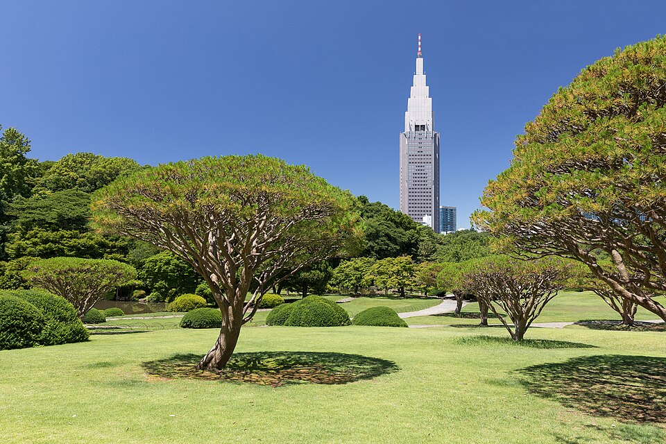
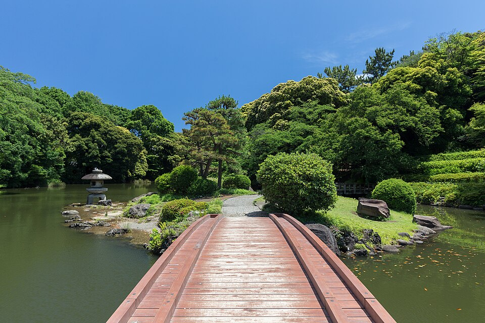
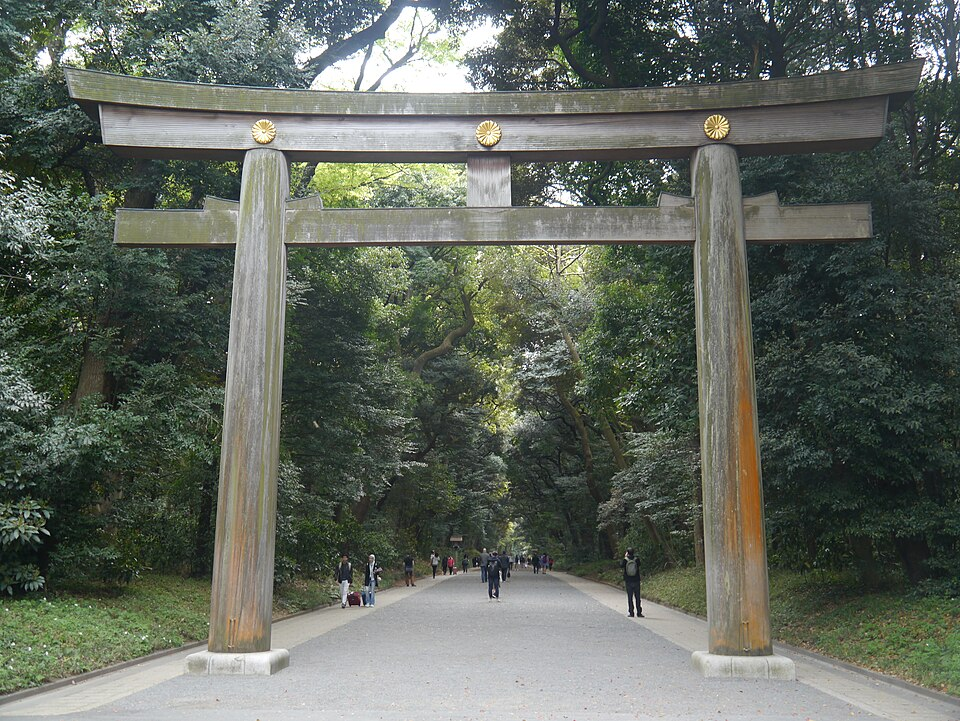
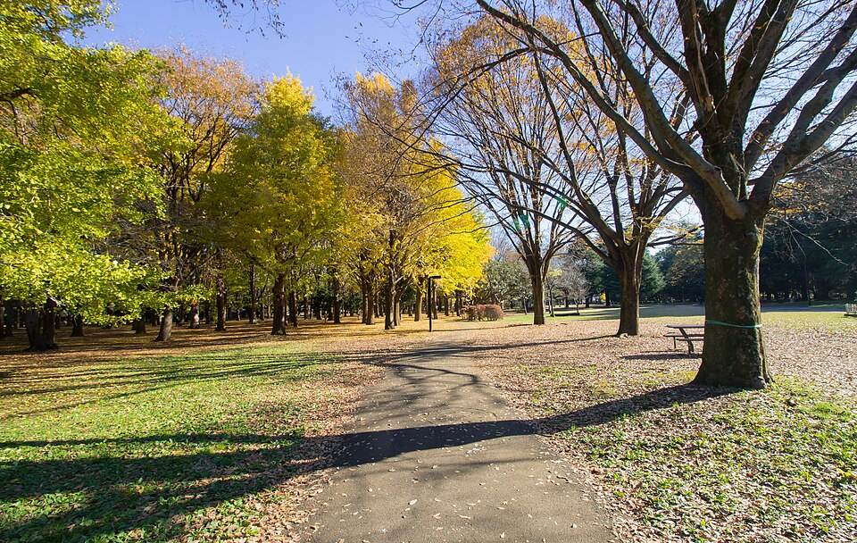
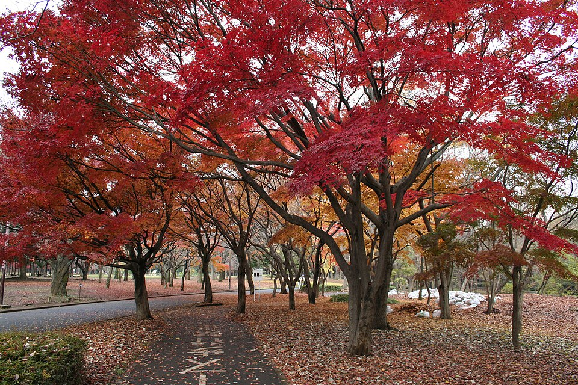

Вариант: Kagurazaka → парки → Shibuya Sky
Отель → Iidabashi → Kagurazaka
Жёлтая JR Sobu (на Mitaka / Nakano), 3 остановки. 11:45-12:55 Kagurazaka, перекус ~12:40. Подробнее о Kagurazaka.
Iidabashi → Sendagaya
Та же жёлтая Sobu (на Mitaka), 4 остановки: Ichigaya, Yotsuya, Shinanomachi, Sendagaya. Следующие поезда 13:07, 13:12. От станции 5 мин до ворот Sendagaya.
Shinjuku Gyoen - бывший императорский сад
Сад, который был садом императорской семьи («旧皇室苑地»). Сейчас национальный сад: японский сад с прудами и мостиками, французский регулярный сад, английский пейзажный газон, а над деревьями небоскрёбы Shinjuku. Октябрь: 9:00-16:30, вход до 16:00. Внутри есть кафе.






Sendagaya → Harajuku
Жёлтая Sobu 1 остановка до Yoyogi, там зелёная Yamanote (на Shibuya / Shinagawa) 1 остановка до Harajuku.
Meiji Jingu - святилище императора Meiji
Святилище 1920 года в честь императора Meiji и императрицы Shōken. Лес из ~100 000 деревьев, привезённых со всей Японии, огромные деревянные ворота, главный зал. От станции до зала ~10 мин по гравийной аллее. По выходным часто свадебные процессии. Это то «императорское», что ближе всего к Shibuya.




Yoyogi Park
Большой городской парк рядом со святилищем, бесплатно, круглосуточно. В воскресенье здесь людно: пикники, музыканты; по путеводителям у входа по воскресеньям танцуют рокабилли.






Yoyogi Park → Shibuya Sky
По улице Kōen-dōri вниз в Shibuya к башне Shibuya Scramble Square. Вход на 14 этаже, быть к 15:55-16:05. Правила крыши.

.jpg){kind=link}

.jpg){kind=link}
Если хочется спокойнее
Убрать Shinjuku Gyoen: из Iidabashi ехать сразу до Harajuku (жёлтая Sobu до Yoyogi + Yamanote 1 ост.), Meiji Jingu и Yoyogi Park 13:30-15:30 без спешки, перекус в парке или в Harajuku.